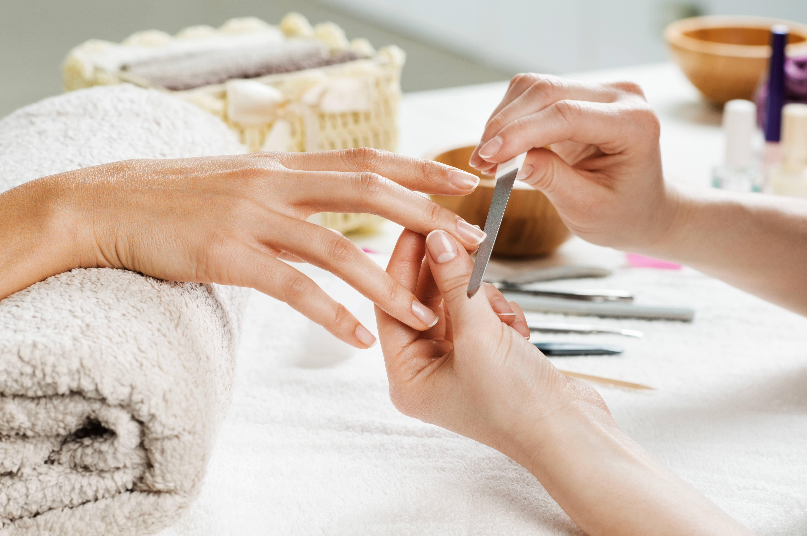

Manikúra
Klasická manikúra
Manikúra je kosmetická procedura, během které dochází ke kultivaci rukou s hlavním důrazem na nehty a jejich okolí.
Hlavním předmětem je čištění nehtů, jejich zarovnání a odstranění odumřelé kůže z jejich okolí a rukou.
Manikúra se používá jak z čistě kosmetických důvodů, tak i z lékařských v případě, že je kolem nehtů nějaká virová, či plísňová infekce.
Základem je mokrá manikúra při které se používá změkčující lázeň.
Dále se zaměřuji i na přístrojovou manikúru pomocí brusky s použitím nástavců-fréz různých tvarů a velikostí, díky které dosáhneme ještě lepších výsledků, navíc je tato metoda šetrnější a vhodná i pro diabetiky.
Japonská manikúra P-shine
je speciální péče o přírodní nehty založená na čistě přírodních látkách.
Péče je dvoufázová a skládá se ze speciální pasty a pudru, které se zalešťují do povrchu přírodního nehtu.
P-shine dodává nehtům vyšší pevnost, pružnost a působí také jako prevence proti lámavosti a třepení nehtů.
